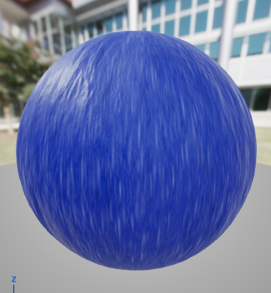
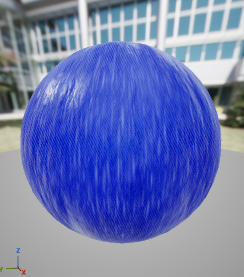
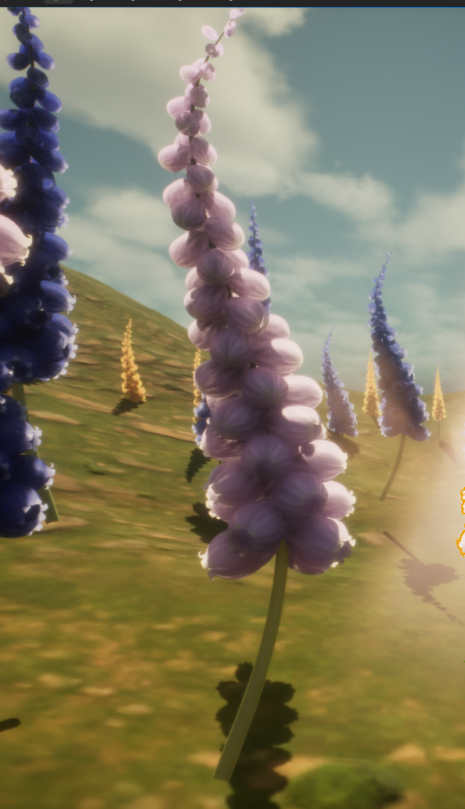
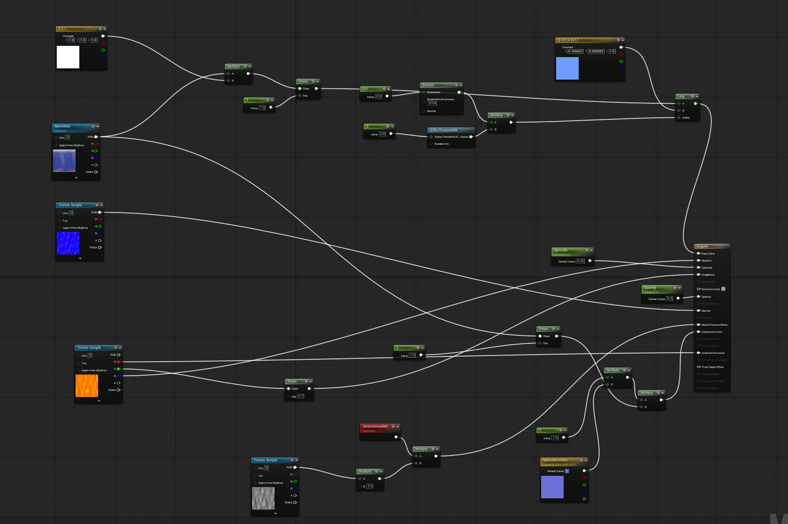

Week5
WHOLE PIPELINE(HOUDINI-UNREAL)
Feb 8
HAVE COMPLETED:
TO-DO LIST:
-
Tested Opacity mask in Houdini and Unreal
-
Test whole pipeline from Houdini to Unreal.
-
Create a sea if flowers using Yichen's Grape Hyacinth
Material In Unreal(Subsurface)
This week, I will try to complete the full pipeline from Houdini to Unreal, including material and lighting setup, to achieve better visual results.
We compared the material before and after adding subsurface scattering (SSS) in Unreal. The initial version looked flatter and more opaque, while the updated material shows softer light diffusion and more natural translucency in the petals, especially in backlit conditions.
Danci shared her documentation on setting up SSS in Unreal, which we referenced and adapted for our own shader. The images below demonstrate the SSS effect under backlighting, where light passes through the petals and creates a more realistic, luminous appearance.



Substance Painter



This is the Blueprint I made, referencing Danci’s.

USD Animation VS VAT Animation In Unreal
I found that Unreal becomes laggy when there are more than five animated USD assets, so I switched to VAT. I baked frames 60–120 using a soft-body method because VAT remains more stable as long as the topology and vertex count stay consistent. If they change, VAT can become glitchy, so I plan to keep a fixed topology moving forward. This is the final result of the VAT animation in Unreal — the performance is good, but I still need to figure out how to loop it and how to generate a procedural layout, as this was done manually.
I also plan to try importing Sanika’s plants into Unreal, but I may not have time to test VAT or develop the leaves’ shader, so I will use Yichen’s flower shader for initial testing in Unreal.
-
Conduct further research on VAT animation.
-
Work on the Houdini-to-Unreal particle pipeline using VAT.